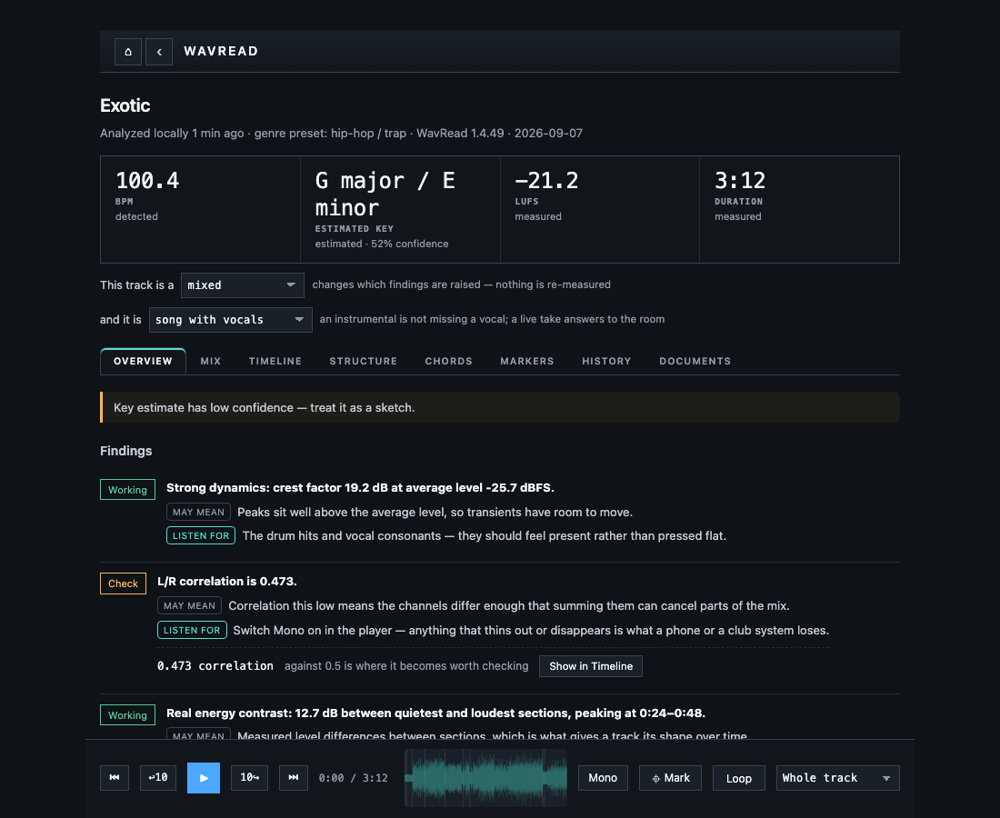
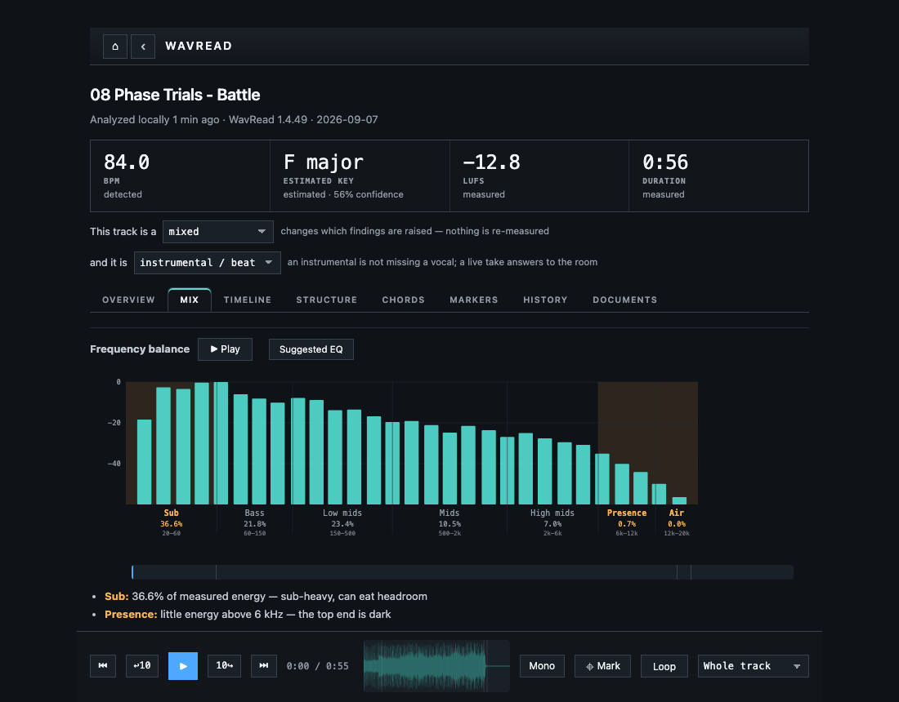
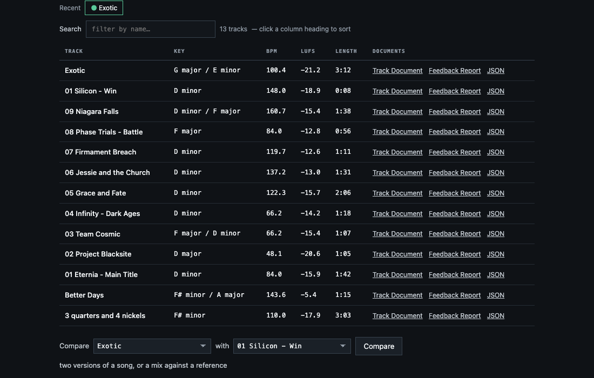
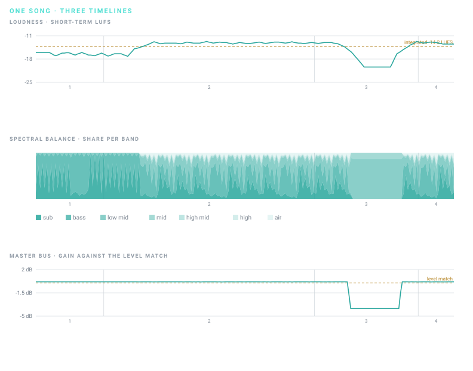

Local audio analysis Early Launch · 1.4.46
Reveal what the
music is doing.
Stop guessing what changed between bounces. WavRead maps your mix track by track and section by section, then translates the evidence into clear language. Your audio stays on your Mac.
- $5 once
- Local analysis
- Apple Silicon

Analysis complete Measured locally · audio never leaves your computer.
One track in. Clear evidence out.
WavRead observes the music.
Your DAW stays in control.
- 01Load
Drop in a finished track, stems, or a DAW capture.
- 02Measure
Tempo, key, loudness, dynamics, spectrum, stereo, structure, and more.
- 03Understand
See the evidence, a possible meaning, and what to listen for.
- 04Document
Export measured facts or a readable feedback report.
Measure
Technical depth,
without the fog.
WavRead maps what is present in a track: frequency balance, true peak, LUFS, loudness range, stereo behavior, song sections, chords, melody, lyrics, and stem activity. Every result says whether it was measured, detected, estimated, or unavailable.
- Evidence-linked findings
- Time-based graphs
- Per-part measurements

Understand
Numbers that explain themselves.
A finding separates the measured result from its possible interpretation and the listening check. Press Listen to hear the exact evidence. WavRead never applies EQ, compression, mastering, or edits to your track.
Meet the Track Document and Feedback ReportThis is the muddiest zone. The balance may feel dense.
Masking around the body of vocals, guitars, or keys.
Compare + organize
Keep the whole record in view.
Group versions of a song, add production notes, compare a mix with a reference, or inspect the parts that built it. Your local library stays searchable and can live on another drive.
Explore the complete workflow
New in 1.4.46
The song's balance,
drawn across the song.
The spectral timeline shows where the energy sits — sub to air — from the first bar to the last, so a verse that turns muddy or a chorus that loses its top end is visible before you go looking for it. Every analysis already in your library gains this view without being reanalyzed.
- Seven bands over time
- Reads stored data
- On the Timeline tab
Hear what your master bus adds. WavRead plays the measured difference between your captured master and your parts — the bus chain and nothing else — and draws the bus's gain movement over time.
Held notes carry their offset in cents, with phrase medians. Analysis only — WavRead never tunes, repairs, or modifies the vocal.
A melody figure previously labeled “confidence” was the note's loudness; it is now named amplitude everywhere it appears.

Built for private listening
No cloud audio. No silent telemetry. No account for the app.
WavRead runs on your Mac. Accounts live only on this website, and the app sends nothing unless you turn problem reports on — then it sends exactly what the privacy page lists, and you can read every report before it goes.
Read every network requestEarly Launch — $5
Five dollars now.
Every Early Launch build.
Nothing here is free. Five dollars buys WavRead and every build published while the Early Launch runs, each on your dashboard and verified by SHA-256. The stable commercial build will be $49 for everyone who arrives after — buy during the Early Launch and it is included, for the five dollars you already paid.
- 01 Every Early Launch build, verified by SHA-256
- 02 Release notes and known issues
- 03 Your reports and their status
- 04 Crash reports, if you turn them on
Current release 1.4.46 · August 30, 2026
Your music is ready to be read.
$5 once, every Early Launch build included — no subscription. Apple Silicon Macs running macOS 14 or later. Signed with an Apple Developer ID and notarised by Apple: macOS asks once whether to open a program downloaded from the Internet, confirms Apple found nothing malicious in it, and never asks again.
Buy WavRead 1.4.46 $5 · Early Launch · DMGA spectral timeline drawing the song's frequency balance across its whole length; a playable master-bus residual so you can hear exactly what your bus chain adds; the bus's gain movement traced over time; vocal intonation measured in cents (analysis only — nothing is tuned or repaired); and a melody figure renamed from “confidence” to what it always was, amplitude.
What the $5 buys →